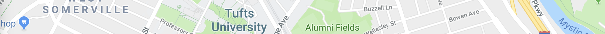
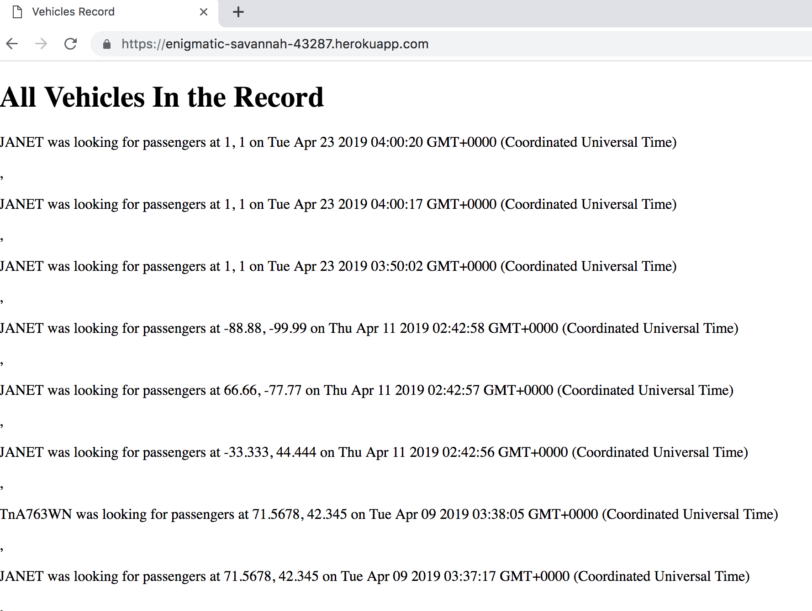
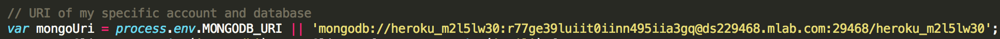
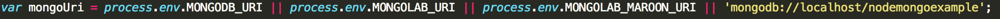
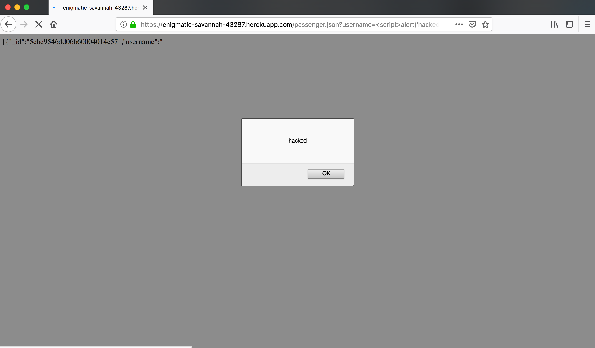
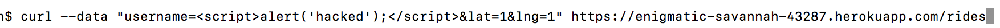
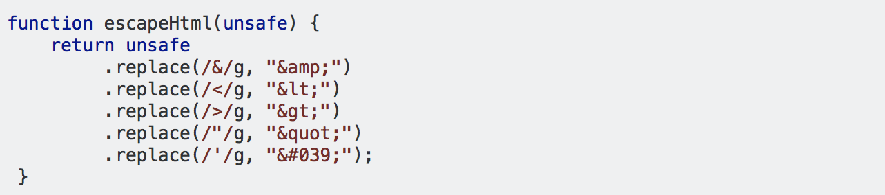
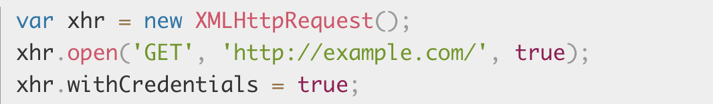

Security Assesment
Josefine Tijssen

Introduction
This report is on the security of the client-side and the server-side code written by Josue Llamas-Rodriguez for Comp20.
The main goal of the product that was analyzed is to provide a platform on which passengers and vehicles can find each other to make ridesharing possible. Security is a great concern for web applications, especially for one that handles user data like this one does. To protect the privacy of the users of this app, I was hired to find the potential vulnerabilities of this web application. In this report, I will outline the way I tested the application, what tools were used, the vulnerabilities that were found, and recommendations on how these vulnerabilities can be prevented.
The web application had the following features or Application Programming Interfaces (APIs) in addition to the ridesharing map:
- A POST /rides API
- This returns a JSON string of either passengers or vehicles, depending on the input. The input is then added to the corresponding list of drivers or passengers who have been seen within the last three minutes.
- A GET /passenger.json API
- This returns a list of all records for a given username as a JSON string if the passenger exists in the MongoDB collection.
- A GET / (This is the root/index page)
- This returns an HTML page with a list of all the vehicles with their usernames in the database in descending order by timestamp.
The client side code implemented an interface to view this data on a map for potential users. Users could click on themselves to see the nearest passenger or vehicle.
Methodology
The tools that were used to test the application:
I first tested the application without looking at the source code by loading the web pages and analyzing them using developer tools. After that, I used curl requests to test if the webpage was vulnerable to Cross-Site scripting. Lastly, I looked at the source code for other vulnerabilities.
Abstract of Findings
I identified multiple security and privacy issues. Firstly, the privacy of the drivers is not protected because their data is shared on a webpage with no protection. Furthermore, the hardcoded credentials gives malicious actors access to the database and thus all the user data. Additionally, users can be presented with fraudulent web content, which can lead to their cookie information being stolen. Also, the web application allows sharing with every origin, so any site can access the server's response.
To ensure that readers of this report can easily read more on the vulnerabilities found and their potential solutions, I added the CWE codes and reference to each found vulnerability.
Issues Found
- Exposure of where each vehicle was and when.
- CWE359: Exposure of Private Information. Read more here.
- This issue is found by sending a GET request to the heroku URL for the server, namely at location http://enigmatic-savannah-43287.herokuapp.com/.
- The severity of this issue is high. Every vehicle that ever entered the database can be viewed by anyone that sends a GET request to this URL, either through curl or by putting it into their webbrowser. While this page was intentionally created, it is a gross violation of the privacy of the drivers.
- By following the aforementioned link, anyone can get to the page, pictured below.

As you can see, this page shows all vehicles on record, without even asking for any form of credentials.
- While this page was intentionally created, it should be secured by a password so that only those who have permission to view it can actually gain access to it. If the page needs to be publicly accessible, make it so that only current drivers are visible and only their most recent location, not their entire driving history.
- Hardcoded credentials in the server code.
- CWE-798: Use of Hard-coded Credentials. Read more here.
- This issue is found within the server.js code, specifically as part of the code to connect to the database.
- The severity of this issue is medium. This code generally is not visible, but it is still very bad practice to include this information hardcoded. If a developer were to copy some of the code, ask for assistance in debugging, or if servercode was accidentally shared, this could compromise the database. There are many ways one can get access to the database server code, such as when the database is down, and this way a malicious actor can log into the database, have access to all the data, and be able to delete this data. See the screenshot below for the hardcoded credentials. The creator even admitted with his comment that this URI contains his account information.

The URL is set up according to the format shown in the next screenshot.
So we know that the username of the Database is heroku_m2l5lw30 and that the password is r77ge39luiit0iinn495iia3gq.
- This vulnerability can be prevented by connecting to the database the following way instead of through a hardcoded URL with hardcoded credentials.

This way you do not need to hardcode a password and username. Instead, the credentials are stored in the system environment generated by Heroku. Log-in information should be stored in an environment variable or other file.
- Cross-Site Scripting (XSS) on the /passenger.json page.
- CWE-79: Improper Neutralization of Input During Web Page Generation. Read more here.
- This issue is found on the /passenger.json page, specifically it is an issue that takes place when getting data send from a user to the server.
- The severity of this issue is high. This is because XSS can use malicious JavaScript to gain access to user sensitive information such as cookie information, send HTTP request to other destinations, and make modifications to the HTML by manipulating the Document Object Model (DOM). A user's cookie can be used to get sensetive information like a session ID. Furthermore an attacker can change the HTML to make the page display a fake login page, which can then be used to trick the user into submitting sensitive information - also known as phishing. The next screenshot provides proof of an alert that has been added using XSS. Instead of an innocent alert, a malicious actor could add a dangerous script. A user would get to this webpage for example by being sent a link through email.

- This vulnerability can be exploited by sending a post request with a malicious script as username to the server, and then going to the passenger.json?username=<script>...</script> webpage. See the following screenshot for an example.

- To prevent this issue, you need to ensure that user input can not interpreted as code. One can do this by converting the < character into < and the > character into >. This can be done in javascript, by adding the following code after the user input is received but before it is send to the database. In this example, the variable unsafe is the raw user input1.

- Access-Control-Allow-Origin is enabled for sharing with every origin.
- CWE-346: Origin Validation Error. Read more here.
- This issue is found within the server.js code, specifically when setting the response header.
- The severity of this issue is high. By having the response be with ("Access-Control-Allow-Origin", "*"), the requested resource allows sharing with every origin2. Therefore, any site can send an XHR request to the application and access the server's response. Simply put, anyone can use curl to send a post request as a vehicle or passenger and thus get the last known location of every passenger or vehicle that was on the network. This is a huge privacy issue and compromises the trust users have in the application.
- It is specifically the following code that causes this issue.
- This problems can be solved by adding the 'withCredentials' property to the XMLHttpRequest3. This property ensures that CORS requests should be made using credentials such as cookies or authorization headers. The following code is an example of how to add the 'withCredentials' property.

Conclusion
In conclusion, there are many ways the security and privacy of this web application can be inproved. To protect the privacy of its users, a password should be required to access the page with all the vehicles on record. Building on that, the credentials of the database should never be a hardcoded string. To prevent XSS, which can be used to gain access to user information such as cookies, all user input should never be interpreted as code. Lastly, it should be ensured that CORS requests only with the correct credentials receive a response.
For the future I recommend looking into the OWASP Top Ten, which shows the top ten web application security risks, along with how these vulnerabilities can be prevented. Furthermore, one can also use tools such as the OWASP Zed Attack Proxy (ZAP) to find security vulnerabilities. Certain vulnerabilities, such as database injection and XSS have been known to cause problems for close to a decade, yet they are still extremely prevalent due to programmers not implementing prevention measures. While correctly securing your website is a time commitment, especially while the field of security and thus the vulnerabilities are constantly evolving, protecting the data of users should be your top priority.
References
1. https://stackoverflow.com/questions/6234773/can-i-escape-html-special-chars-in-javascript
2. https://stackoverflow.com/questions/12001269/what-are-the-security-risks-of-setting-access-control-allow-origin
3. https://xhr.spec.whatwg.org/#the-withcredentials-attribute
- http://www.veracode.com/security/xss
- https://stackoverflow.com/questions/9713644/when-is-it-safe-to-enable-cors/9725695#9725695